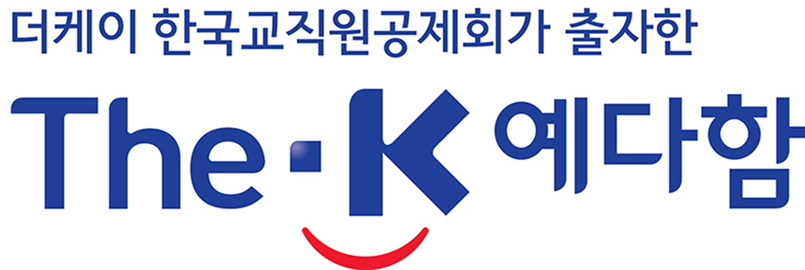
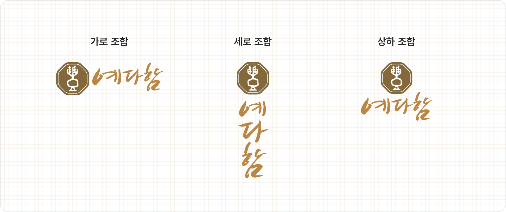

CI에 대한 이해와 규정 준수를 통해
일관성 유지의 기준을 제시합니다.
일관성 유지의 기준을 제시합니다.
-
더케이 예다함㈜
CI 소개 - 더케이 예다함㈜ Corporate Identity는 웃는 형상을 통해 최고의 서비스, 친절로 고객을 우대하는 더케이 예다함㈜의 의지와 프리미엄의례서비스 회사로서의 자신감과 여유로움을 표방하는 형상으로 동종업계 대비 형태적 차별성과 친근감을 통해 확장된 고객군에게 적극적으로 다가가려는 브랜드 정책을 담고 있습니다.
-

-
메인 컬러
-
The-K BlueRGB 33 64 154
CMYK 100 90 0 0 -
The-K RedRGB 237 27 47
CMYK 0 100 90 0
-
-
예다함 브랜드
로고 타입 - 더케이 예다함㈜의 상조서비스 브랜드인 "예다함"은 예의를 지켜 정중하게 대한다는(예우)와 어떤 것이 끝나거나 남아있지 아니한다는(다함)을 합쳐서 예우를 다해 함께하는 상조서비스를 의미합니다. 고객께서 만족할 때까지 최선을 다하는 서비스 정신과 이를 처음부터 끝까지 완벽하게 제공하겠다는 뜻을 모두 담고 있습니다.
-
-
예다함 BI 조합
- 예다함의 Symbol은 禮의 상형문자 모티브로 예의. 예를 다하는 서비스 정신을 표현하였으며 팔각은 낙원의 회복, 재생, 부활, 지복, 완전한 리듬을 상징합니다. 또한 전통, 위, 고급, 풍부함을 상징하는 황금색으로 고객에 대한 최고의 마음과 섬김의 정신을 담았습니다.
-
메인 컬러
-
Yedaham GoldPANTONE 463C
CMYK 60 65 100 0 -
The-K Blue
CMYK 60 75 100 35 -
The-K BluePANTONE 4645C
CMYK 0 32 72 30
더케이 예다함㈜와 예다함 LogoType은 일관된 이미지와 가독성, Symbol과의 조화로움을 고려하여 디자인되었으므로, 어떠한 경우라도 변형하여 사용할 수 없습니다. -